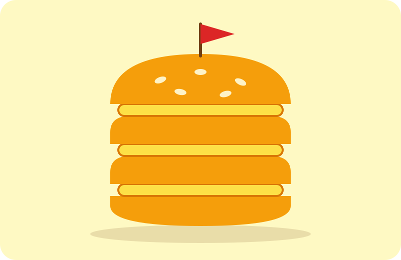

Piškotový Big Mac
Suroviny
- 8 dětských piškotů
- 3 vrstvy Perly přímo z lednice
- 1 párátko s vlaječkou (pro autoritu)
Postup
- Perlu rozetřete na rovnou stranu čtyř piškotů.
- Poskládejte do věže: piškot, Perla, piškot, Perla, piškot, Perla, piškot.
- Vrchní piškot položte vypouklou stranou nahoru, ať vypadá jako houska.
- Zapíchněte vlaječku a snězte potají nad dřezem.
Tip šéfkuchaře: Majonéza by byla přehnaná. Tohle už je přehnané samo o sobě.